Pilot: Bridging the Gap Between University and Work
A live industry brief from Atlassian: design an intelligent, AI-powered project management tool to help students and new employees manage work across university, the workplace, and personal life — all in one place.

The brief
Atlassian wanted to expand into a younger demographic at a time when they were investing heavily in AI through Atlassian Intelligence — their new AI-powered virtual teammate launching across the product suite. The challenge: existing tools like Asana, Notion, and Monday.com weren't built for people who need to juggle academic deadlines, early-career responsibilities, and personal commitments all at once. Students were stitching together Google Drive, Canvas, Discord, and WhatsApp just to get through the week.
Brief: Design an intelligent project management tool for students and new employees that enhances productivity and team collaboration, sitting within the Atlassian ecosystem.
Target users
The brief targeted two overlapping groups: students managing academic workloads and group assignments, and employees in the early stages of their careers navigating new workplace structures. Both share the same core friction — transitioning between contexts and tools — making them a natural fit for a single, intelligent platform.
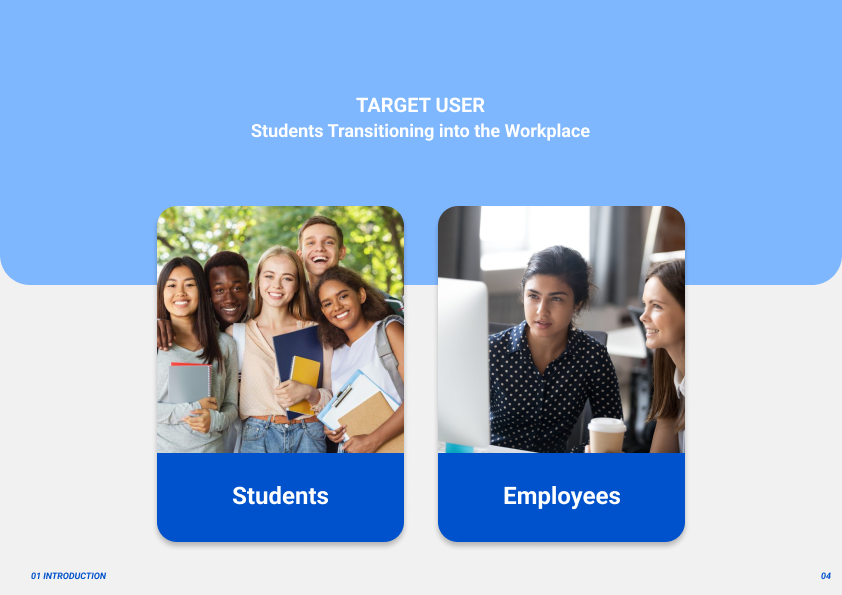
Process
Discover
Define
Ideate
Prototype
Test
Background research mapped Atlassian's strategic goals — attracting young users, staying ahead of industry, expanding to new organisations — against what students and early-career employees actually need. Competitor analysis covered three categories: direct competitors (Asana, Notion, Monday.com), non-direct competitors with relevant patterns (GitHub, Figma, Canva), and the tools students were already using day-to-day. None of the existing solutions bridged the student-to-employee context; they either served professionals or academics, not both.
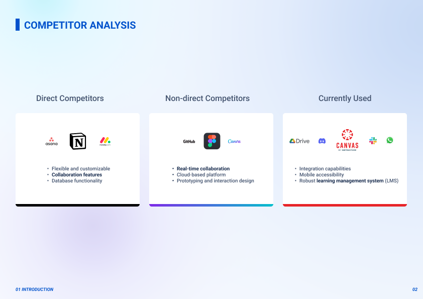
User research confirmed the gap. Five findings stood out:
95%
Want one tool to process diverse tasks
86%
Want to improve task & time management
80%
Want more engaging project management tools
75%
Want to improve group communication
70%
Want more efficient software
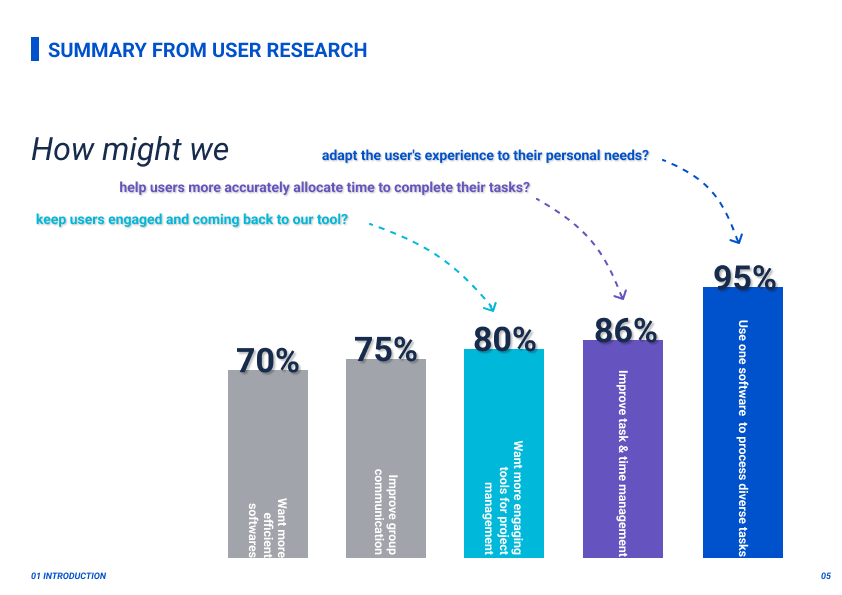
Three "how might we" questions shaped the design direction: how might we adapt the experience to personal needs? How might we help users more accurately allocate time to complete their tasks? How might we keep users engaged and coming back? These mapped to three design opportunities: personalised productivity enhancement, engagement through seamless integration, and contextual collaboration boost.
My role
I was a UX/UI designer on a team of four. I owned the research synthesis, led ideation sessions (Crazy 8s, group brainstorming, decision matrix), and designed core interaction flows including the AI project creation flow and the notification system. I contributed to all three design iterations and presented the final prototype and rationale to Atlassian's product and design team.
Design concept
Pilot is an intelligent project management tool for students and employees, designed to enhance productivity and team collaboration within the Atlassian ecosystem. The homepage surfaces AI-recommended tasks ordered by priority across all active projects — giving users an immediate view of their most imminent commitments across academic, workplace, and personal contexts.

Solution
Homepage
Displays the most imminent tasks and an overview of the week's commitments. The recommendation engine surfaces priority tasks across all active projects so users never lose track of what matters most right now. Filters let users narrow by project, workspace, or task status.
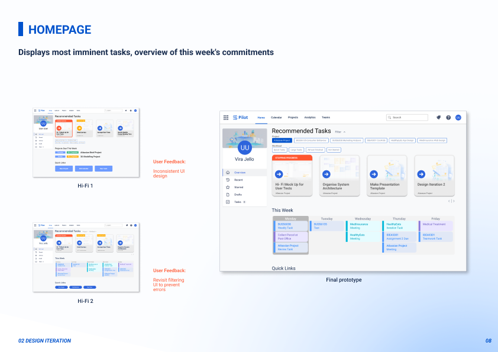
Project overview
A dedicated space for projects organised by context — Workplace, Individual, and Academic. Each project page shows the team, open tasks, milestones on a timeline, and an upcoming agenda. The design evolved from two Hi-Fi iterations based on user feedback around visibility of interactions and content hierarchy.
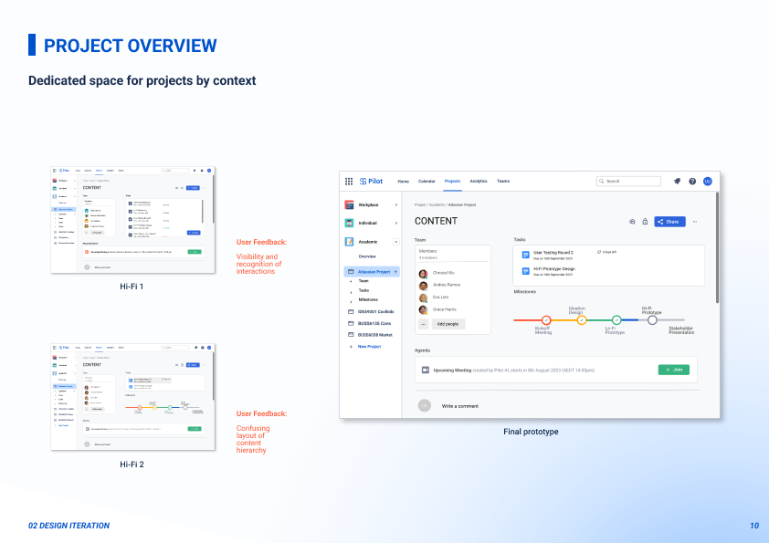
New project with AI
Users paste in an assignment brief or project description, and Pilot generates a full task structure — broken down by milestone across weeks — using AI. Users can review, edit, or accept the suggestions before committing. This was identified as the standout differentiator against Atlassian's existing products: a gap none of them currently fill.
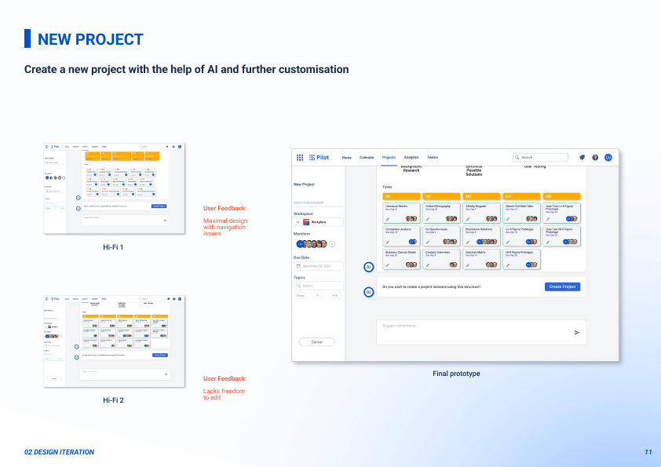
Calendar
The calendar uses AI to schedule group meetings around team availability. When adding an event, Pilot shows which teammates are free on that date and time. When a new event clashes with an existing commitment, it proactively suggests alternative slots — giving users concrete resolution options rather than just flagging a conflict.
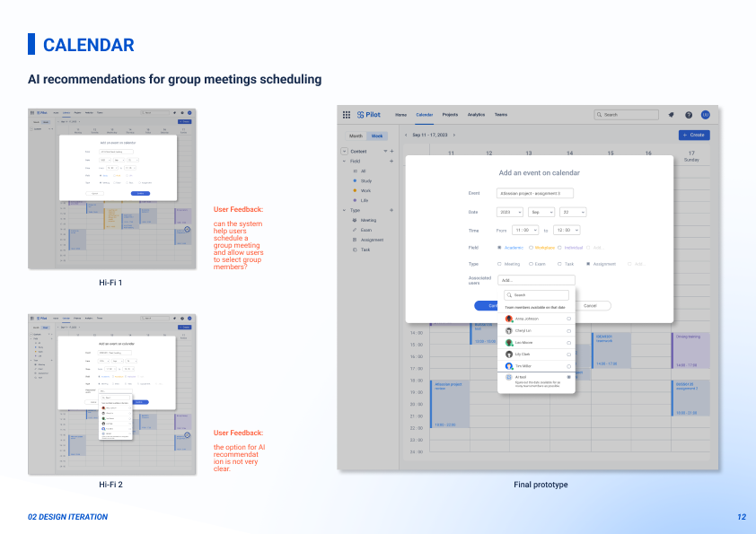
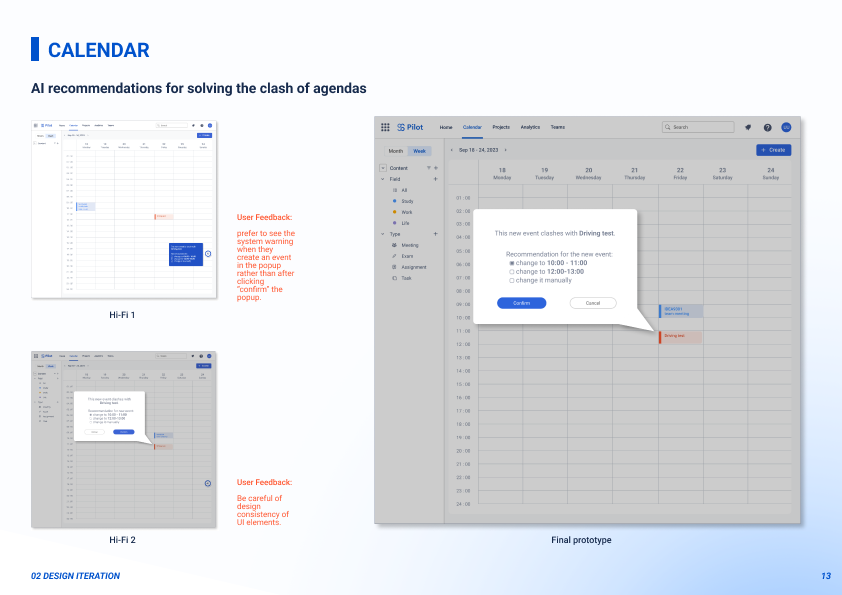
Notifications
A system reminder for task progress — Pilot notifies users when milestones are approaching and tasks have been postponed. Users can also send assistance requests directly to group members from within the project page, removing the need to switch to external messaging apps.
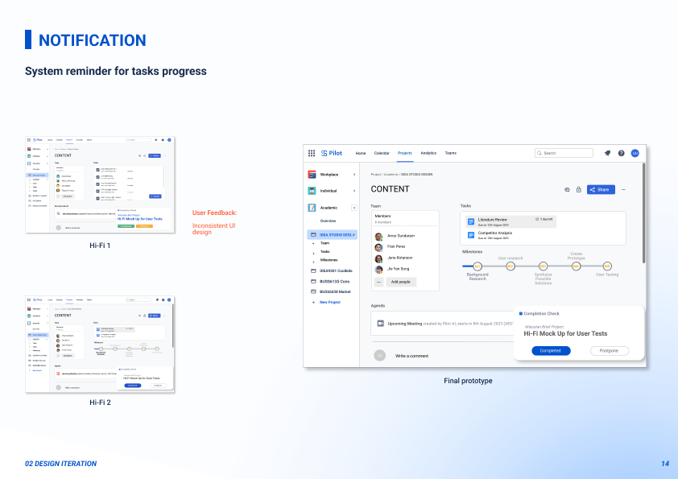
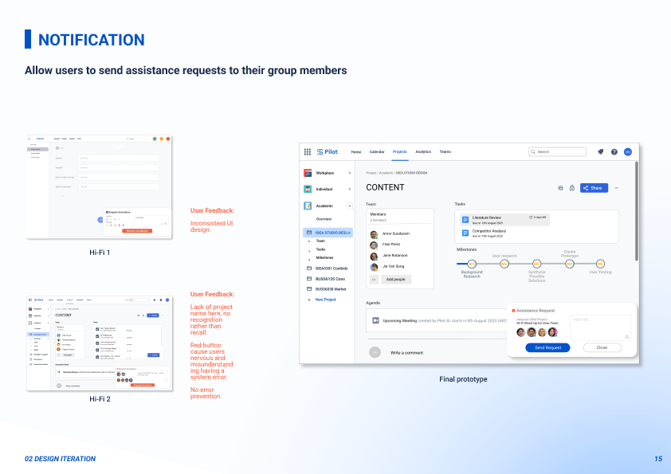
Analytics
Premium feature: view team and individual progress at a glance. The analytics dashboard tracks milestones, tasks, workload, and effort across all projects. A "Per User" toggle lets users compare their own performance against team averages — directly addressing the research finding that users wanted visibility into group accountability.
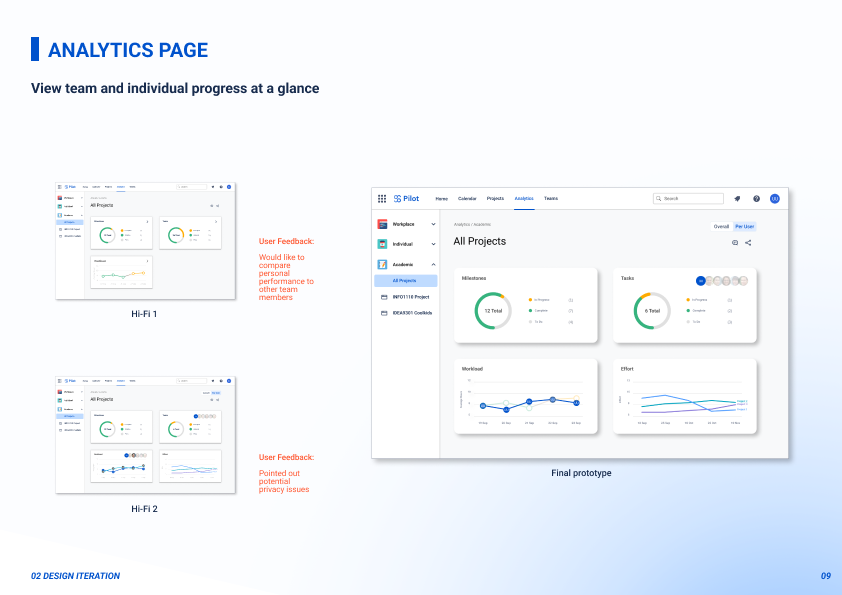
Atlassian Intelligence
Two AI features are woven throughout the product: predictive user mentions in the calendar (surfacing available teammates when scheduling a meeting) and AI-generated project plans (defining tasks and milestones directly from a brief). Both follow Atlassian's existing design patterns so Pilot feels like a natural extension of the ecosystem rather than a separate product.
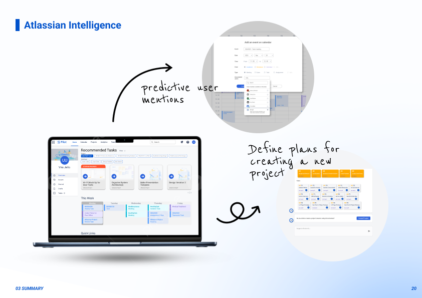
Why Pilot
Pilot addresses three core needs no existing tool covered for this audience:
- Manage responsibilities across available time and team members
- Break down project requirements into tangible goals
- Reduce time spent figuring out logistics
What makes it stand out: a gentle learning curve thanks to Atlassian's familiar design language; well-integrated across academic, workplace, and personal contexts in a single tool; high-impact features like the AI scaffold and clash detection; and AI transformative power that actively improves how users plan and collaborate — not just a passive task list.
Impact
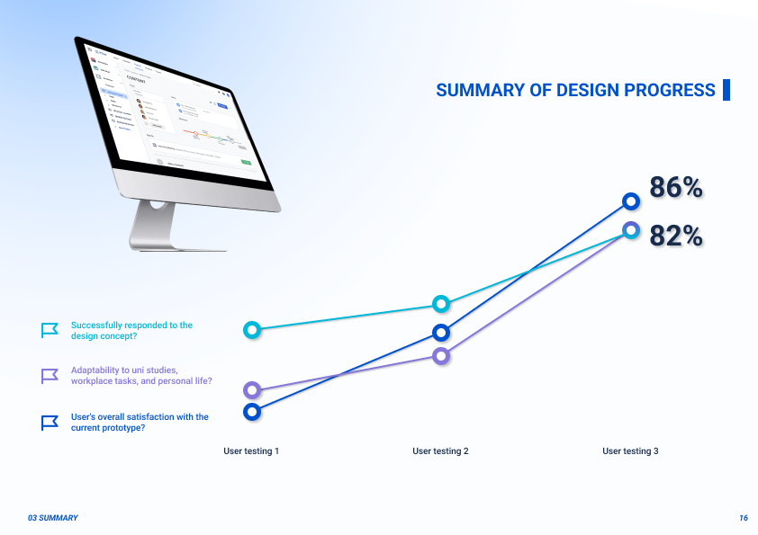
3
Rounds of user testing across the design process
86%
Said the prototype successfully responded to the design concept
82%
Rated Pilot adaptable across uni studies, workplace tasks, and personal life
Both satisfaction metrics improved consistently across all three testing rounds. The prototype was presented to Atlassian's product and design team at the end of the brief. The AI project scaffold — which generates a full task structure directly from a brief — was identified as the standout differentiator, addressing a gap none of Atlassian's existing products currently fill.